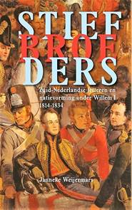
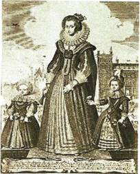

Kaftillustratie:
kaft boek Eric
Vanneufville over Jean-Marie Gantois
Mededelingen
Hernieuwen
ledenbijdrage voor 2020
Wanneer u deze Nieuwsbrief
onder ogen krijgt hebben de leden die hun bijdrage tijdig
vereffenden ondertussen ook al lang het jaarboek De
Nederlanden extra muros 42 (2020) ontvangen Wie zijn
bijdrage alsnog naliet te betalen kan dit alsnog doen; na
boeking van de bijdrage, het jaarboek uiteraard nagestuurd.
De minimumbijdrage
bleef behouden op 29 . Vanaf het bedrag van 35 boeken we u
met dank als steunend lid. Vereffening graag via onze rekening
IBAN: BE13 4648 2202 5139 BIC: KREDBEBB t.n.v.
Vereniging/Stichting, Paddevijverstraat 2, 8900 Ieper.
Uw e-postadres
Doorheen de jaren hadden we
al ruim honderd e-postadressen van leden kunnen opslaan. Helaas
is een computerchrash er de ooraak van dat die info verloren
gegaan is. Mogen we iedereen die over een e-adres beschikt
vragen om ons dit toe te sturen op ons admiistratie-adres maurits.cailliau@skynet.be
? Dit zou het ons de gelegenheid bieden om deze leden sneller en
gerichter te informeren dan onze drie-maandelijkse Nieuwsbrief
het mogelijk maakt.
Ten
Ten geleidebij
het Zannekinjaarboek
De Nederlanden
extra muros 42 (2020)
Ook dit 42e Jaarboek De Nederlanden extra
muros brengt weer een breed palet aan bijdragen over de
rangebieden van onze Lage Landen die deel uitmaken van ons
geschiedkundig erfgoed. En als steeds openen we ook deze editie
met de korte bijdrage die zowat in een notendop het programma
van Zannekin
verwoordt.
Dick Wortel komt als eerste aan het woord met De
Nederlandse taal in Frans-Vlaanderen. Het betreft de
uitgeschreven versie van zijn lezing op de Ontmoetingsdag van
Zannekin te Leiden in het najaar van 2019.
In het najaar van 1964 werd Jean-Marie
Gantois 60e verjaardag feestelijk gevierd op het
grafelijk Slot van Male nabij Brugge. Bij die gelegenheid sprak
de gevierde zijn beklijvende rede Bezinning bij een
verjaardag uit. Na zoveel jaren past het ons daarover
andermaal te bezinnen, temeer daar die feestviering de
onmiddellijke aanleiding was tot de (her)oprichting van de
huidige Vereniging/Stichting Zannekin. Als bijlage daarbij een
overzicht van de bijdragen gewijd aan J.M. Gantois in onze
jaarboekenreeks.
Johan Hellinx verrast ons met Een
Belgisch-Nederlandse kijk op het Brussel van Charlotte Bront.
De zussen Emily en Charlotte arriveerden anno 1842 in het
toen nog grotendeels Nederlandstalige Brussel. Verder wordt
stilgestaan bij het op die tijd en de Bronts terugblikkende
werk van Jolien Janzing en Nathalie Stalmans.
In Een wandeling door Den Haag neemt
Jan van Tongeren ons mee op een leerrijke geschiedenisles
doorheen de residentiestad, waarbij aan tal van aspecten in het
straatbeeld stilgestaan wordt. Een herinnering aan onze
Ontmoetingsdag van enkele jaren terug, maar evenzeer een
handzame handreiking voor wie op zn eentje op verkenning wil
gaan.
Wim van Heugten nam een onafgewerkte studie van zn
overleden broer Wiro weer ter hand waarin de focus uitgaat naar
leven en werk van De Maaslandse heilige Sint-Hubertus.
Daarbij wordt ook veel aandacht besteed aan de talrijke
pelgrimswegen en bedevaartsoorden in deze.
Johan Hellinx is in dit jaarboek andermaal present met
een eerste luik over De strijd van de Geuzen in de
ontluikende Belgische literatuur. Daarin wordt vooral
stilgestaan bij de geuzenromans van de West-Vlaming Henri Moke,
die al in 1827 debuteerde als romancier en rekenen kon, op de
steun van koning Willem I. Drie jaar later kwam er een bruusk
einde aan de Verenigde Nederlanden en diende de nieuwe staat op
zoek naar een legitimatie voor zijn bestaan. Moke wist aan die
gewijzigde context een mouw te passen.
In De Lage Landen, gisteren en morgen
blikt Maurits Cailliau terug en vooruit op de
geschiedenis van onze Lage Landen. Hij betreurt daarbij het
verraad van de Vlaamse beweging ten overstaan van haar rol bij
de Heel-Nederlandse bestrevingen, waarbij ze de Belgische
begrenzingen niet weet te overstijgen.
Met de Kroniek en boekbesprekingen
sluiten we traditioneel ons jaarboek af. In de kroniek wordt wat
breder stilgestaan bij de heilige Godelieve en het recente
memobord in haar geboorteplaats Heimfriedswilder nabij Bonen
(Bouloge) en in de boekbesprekingen bij het boekje van Eric
Vanneufville over Jean-Marie Gantois dat veel te wensen
overlaat.
Maurits Cailliau
Een
frisse wind in de Franse Nederlanden
Alain
Walenne en de Federalistsche studenten in Rijsel
Alain Walenne, '72 jaar, woont in Santes
bij Rijsel. In 1970, was hij medeoprichter van de studentenkrng
Etudiants Fdralistes Lllois. De vereniging gaf een
tweewekelijkse nieuwsbrief uit, Le Courrier Lillois, met
nieuws over de Franse Nederlanden en de Europese volkeren. Hoe
een handvol studenten een frisse wind kon brengen in de Franse
Nederlanden? We vragen het aan Alain.
Walenne,
50 jaar later
Je bent geen Vlaming maar een
Henegouwer. Hoe kwam je aan je belangstelling voor de Vlaamse
zaak en de Nederlandse gedachte in Frankrijk?
Alain Walenne: Ik ben in Maubeuge
geboren: ik ben dus een 'Franse' Henegouwer. De Walennes zijn
al eeuwen aanwezig in Henegouwen en het dal van de Samber, aan
beide kanten van de Schreve. Langs moederskant heb ik ook banden
met Normandi en Pimont. Tijdens mijn collegetijd in Maubeuge
kreeg ik belangstelling voor de geschiedenis, de tradities en
het dialect van mijn geboortestreek.
Vervolgens studeerde ik geschiedenis en
aardrijkskunde aan de Universiteit Rijsel. Daar kwam ik in
contact met Vlamingen en met de Nederlandse gedachte.
Regionalistisch
en Europees
In 1970 richtten jullie een kring van
Federalistische studenten in Rijsel op. Hoe is deze kring
ontstaan?
In Rijsel werd ik bevriend met een
streekgenoot, Franois-Xavier Dillmann, die later naam maakte
als specialist in Noordse mythologie en Scandinavische
literatuur. Hij studeerde er toen letteren en middeleeuwse
geschiedenis. Het was Dillmann die het initiatief nam om een
studentenbeweging op te richten die tegelijk regionalistisch en
Europees gericht was.
Wie was er nog bij betrokken?
Naast Dillmann en mezelf, Grard Landry,
student financile wetenschappen en later zakenman, uitgever en
publicist; Georges de Verrewaere, student en vervolgens leraar
Nederlands, in Vlaanderen bekend als spreker en als gids; Eric
Vanneufvlle, student geschiedenis die zou doctoreren over de
Saksisch-Friese ruimte, schrijver van vele boeken over de
geschiedenis van onze regio. Dat waren de voornaamste
medewerkers.
Hadden jullie contacten met de
traditionele Vlaamse Beweging in Frankrijk?
'Vrij snel werd de brug gemaakt met de
geestelijke erfgenamen van Priester Gantois die in 1968 was
overleden: Dr. Jan Klaas van de Section Fdraliste des Pa
ys-Bas franais, uitgever van het tijdschrift La Nouvelle
Flandre; Jaak Fermaut, leraar Nederlands, medewerker aan
de publicaties Ons Erfdeel en Septentron; en
met Michel Galloy die de Vlaamse Vrienden in Frankrijk
vertegenwoordigde. Via deze mensen kwamen wij ook in contact met
het netwerk rond het Komitee voor Frans -Vlaanderen, onder
leiding van Luc Verbeke.
Europees
federalisme
Jullie gaven de nieuwsbrief Le Courier
LilIois uit met Eric Sanders en Marc Wattiez als
hoofdredacteur. Die namen heb je nog niet genoemd?
De Courrer was een bescheiden
veertiendaagse nieuwsbrief die op een paar honderd exemplaren
werd gedrukt, als ik me goed herinner. Maar het werd vlot
gelezen en doorgegeven in studentenkringen.
Eric Sanders was de schuilnaam van
Franois-Xavier Dillmann, de eerste hoofdredacteur. Grard
Landry volgde hem een jaar later op. Dan kwam mijn beurt: ik
tekende met Marc Watttiez. Na drie jaar, in september 1973,
stopte de verschijning van de Courrier Lllois door mijn
vertrek naar Parijs als gevolg van mijn studies.
Ik was 15-16 jaar toen ik de Le
Courrier Lillos ontdekte. Ik kan getuigen dat het een nieuw
perspectief gaf aan mijn denken van toen.
De algemene filosofie was het Europees
federalisme, niet in de zin van de huidige Eurocratische klucht,
maar meer volgens het werkbaar model van echte federale staten
als Zwitserland en Duitsland.
Wat waren jullie concrete
doelstellingen?
Onze voornaamste doelen formuleerden we
zo:
- Meer autonomie voor de universiteit met
een opening naar de regios en naar Europa;
- Meer macht voor de regio's met een door
het volk verkozen vertegenwoordiging;
- Oprichting van een Federaal Europa met
de regio's als voornaamste componenten;
- Integratie van de toenmalige regio
Nord-Pas-de-Calais als internationale speler in een groot
noordwestelijk Europees geheel;
- De promotie van onze regionale culturen
door de herwaardering van de eigen wortels en het respect voor
etnische diversiteit.
Debatavonden
Met de Courrier heb ik de hoeken van
Paul Srant, Guy Hraud en Ian Four ontdekt.
In Frankrijk waren dat toen de grote
namen rond het idee van het Europa van de volkeren. De titels
van hun boeken waren al een project op zich: LEurope aux
100 drapeaux van de Bretoen Yann Four, Guy Hraud met Les
principes du fdralisme et la construction europenne. Je had
ook en op Franse schaal Paul Srant met La France des
minorits. auteurs als Herv L'avenir met Europe et
les rgions en Paul Srant met La France des minorits
.
De meeste van deze schrijvers hebben wij
ook in Rijsel als sprekers uitgenodigd Wij organiseerden
allerlei conferenties en debatavonden, meestal in de gebouwen
van de faculteit Rechten of in het Maison de l' Europe. Wij
konden hiervoor rekenen op de steun van de Europese Beweging die
er haar zetel had. Op een bepaald moment werd de stap naar
de politiek aangekondigd. Waarom is dit toen niet doorgegaan?
In 1973 koesterden wij even het idee om
een stap in de politiek te wagen. Het werd tijd om de beweging
uit te breiden, onze inspanningen te bundelen, en een ruimer
politiek kader te geven aan ons regionalistisch en Europees
streven. Maar het studentenmilieu was te onstabiel om zulk een
project te dragen.'
Later
zal men verschillende Federalistische studenten terugvinden
rond allerlei nieuwe initiatieven en verenigingen.
Al in 1971 steunden wij de oprichting
van de Michiel de Swaenkrng. De eerste secretaris van de kring
Bernard de Leersnyder, en verschillende andere leden waren ook
lid van de Federalistische studenten.
Jan Pol Sepieter en jezelf, beiden lezers
van het eerste uur, hebben dan de vereniging Hekkerschreeuwen
opgericht. Felix Boutu die de dynamische voorzitter werd van de
vereniging Yzerhouck, studeerde zoals ik aardrijkskunde en
schreef enkele artikelen voor de Courrier Lillois.
Andr Lvque, een Picardir die ook aan
onze nieuwsbrief meewerkte, werd een bekende verdediger van de
Picardische streektaal. En zelf heb ik nog, samen met
Franois-Xavier Dillmann, het Institut Culture] Nordique
opgericht.
Enkele leden van onze studentenkring
maakten ook naam als schrijver: FX. Dillmann die o.m. voor zijn
voortreffelijke vertaling van de Edda werd bekroond. En
ook G. Landry, G. de Verrewaere, E. Vanneufville, J.-P.
Sepieter. Blijkbaar is schrijven op jonge leeftijd een
uitstekende leerschool voor later.
Een
boeiend avontuur
Wat was het Institut Culture] Nordique?
We hebben dit instituut in 1976
opgericht. Het doel was om de culturele rijkdommen van de Franse
Nederlanden en de landen rond de Noord- en de Oostzee beter te
leren kennen en te promoten. Wij organiseerden conferenties,
tentoonstellingen, alsook culturele uitstappen naar deze
landen.
De stap naar de politiek werd dan toch
gemaakt met de eerste verkiezingen voor het Europees Parlement
in juni 1979?
De Bretonse schrijver Jean-Edern Hallier
had een lijst Rgons-Europe ingediend met als doel een
stem te geven aan de verschillende regionalistische bewegingen
in Frankrijk. Met enkele oudgedienden van de Courrer
Lil1ois, en de hulp van de Frans-Vlaamse activist Rgis De
Mol, hebben wij namens de Franse Nederlanden aan deze
verkiezingen deelgenomen. Veel heeft het uiteindelijk niet
opgeleverd, maar het was wel een boeiend avontuur samen met de
Bretoenen, Basken, Elzassers, Occitanen, enz.
Zandkorrel
Je hebt in de jaren 80 opnieuw een
nieuwsbrief uitgegeven: Le Courrier des Pays-Bas franais?
Inderdaad, nog een initiatief rond
enkele oude getrouwen van de Courrier Liliois, onder
leiding van Grard Landry en mezelf. Deze maandelijkse
nieuwsbrief hebben wij van 1983 tot 1991 uitgegeven.
Landry schreef toen in het eerste nummer:
Onze streek is cultureel ziek, als in haar ziel getroffen. Ook
Europa twijfelt over zijn toekomst, lamgeslagen door het verlies
van zijn historische, culturele en morele waarden
Hebben het handvol studenten van toen
daar iets aan kunnen veranderen?
Ik antwoord met het beeld van de
zandkorrel die het raderwerk van het Franse centralisme en
jakobinisme verstoort. Ondanks beperkte middelen hebben wij
verschillende nieuwe initiatieven mee op gang gebracht. Ieder
zette zijn beste beentje voor. Ik durf zeggen dat onze
Federalistische studenten een frisse wind over de Nederlanden in
Frankrijk lieten waaien en onze droom verder zetten. Wie niet
waagt...
Wido Bourel
__________________
Bron:Doorbraak,
25-7-2020
Stiefbroeders?
In het Verenigd Koninkrijk der
Nederlanden (1815-1830) waren de Nederlandse taal en literatuur
het middel bij uitstek om de landsdelen het huidige Belgi en
Nederland tot een geheel te smeden. Koning Willem I probeerde
met een keur aan maatregelen het Zuidelijke literaire leven te
stimuleren en niet zelden ook onder controle van de regering te
brengen ter bevordering van de eenheid.
Janneke
Weijermars beschrijft niet alleen de sturende kracht van dit
beleid, maar vooral ook de effecten ervan in het Zuiden. Voor
sommige auteurs was de Noord-Nederlandse literatuur de norm
waaraan zij wilden voldoen, bij anderen bracht de vereniging met
het Noorden juist een verlangen naar eigenheid teweeg. De
ruzies, het wederzijdse onbegrip en de daarop volgende
polemieken waren nauw vervlochten met politieke kwesties. Zo
vormt Stiefbroeders een
geschiedenis
van het Verenigd Koninkrijk der Nederlanden vanuit literair
perspectief. Op 19 oktober 2016 ontving Janneke Weijermars voor
dit boek de Prof. dr. Leon Elautprijs. Met deze prijs bekroont
de KANTL een wetenschappelijke studie over de geschiedenis van
de culturele Vlaamse Beweging.
op het zand van een strand in het
bevrijde noorden
met aan het roer de kordate prins Maurits
de latere moordenaar van Johan van
Oldenbarnevelt.
De hoge zeilen klapperden in de
voorjaarswind
en de voortgang van dit zwaar beladen
landschip
vond plaats in het streng ingedijkt
polderland
aan de grazige weiden van het koele
waterland.
Hendrik Carette
Amalia van Solms vrouwe van Turnhout
Baarle
1 dorp, 2 landen en 30 enclaves
Op het einde van de 12e eeuw ontstond er een
grensconflict tussen Hertog Hendrik I van Brabant en Graaf Dirk
VII van Holland. Volgens de overlevering heeft de hertog in 1185
de stad 's - Hertogenbosch gesticht. Zijn praalgraf bevindt zich
in de Leuvense Sint-Pieterskerk. De graaf van Holland wilde zijn
invloed naar het zuiden uitbreiden, terwijl Hendrik I een buffer
verkoos tussen zijn hertogdom en het expansieve graafschap
Holland. Daarom sloot de hertog een bondgenootschap met de Heer
van Breda, Godfried II van Schoten. Die werd in 1198, leenman
van hertog Hendrik I. In ruil kreeg hij een groot stuk land
waarin een aantal enclaves lagen die aan de Abdij van Thorn of
de hertog toebehoorden. Een dergelijk patroon was in die tijd
niet ongebruikelijk. In de buurt van Baarle is de grens echter
nimmer gecorrigeerd, ook niet toen het Verdrag van Munster in
1648 de grens tussen de Spaanse en de Staatse gebieden afbakende
en al evenmin als de Zuidelijke Nederlanden zich in 1830 van het
Koninkrijk der Nederlanden losmaakten. In 1403 trouwt de Duitse
graaf Engelbrecht I van Nassau met Johanna van Polanen, de
dochter van de Heer van Breda. Zo werd Engelbrecht-I zelf Heer
van Breda en werd de naam Nassau verbonden met het Nederlandse
Vorstenhuis. De enclaves speelden niet alleen staatkundig maar
ook religieus een rol. Het was Amalia van Solms, de vrouw van
stadhouder Frederik Hendrik, Prins van Oranje, die als Vrouwe
van Turnhout, opkwam voor het behoud van de enclaves Voor haar
troonsafstand droeg Koningin Beatrix eveneens de titel Vrouwe
van Turnhout en haar zoon, Koning Willem-Alexander is nu Heer
van Turnhout. De bedoeling van Amalia was dat de katholieken in
Baarle ook na de Vrede van Mnster in 1648, hun geloof konden
blijven belijden. De Sint-Remigiuskerk bevond zich immers op het
grondgebied van de Spaanse Nederlanden. In 1892 beoogde Belgi
de enclaves van Baarle-Hertog met een oppervlakte van 267
hectaren, tegen de tot Baarle-Nassau horende gebiedsdelen
Ulicoten en Castelr te ruilen. In 1995 zijn de enclavegrenzen
Rijksgrenzen geworden. Het Nederlandse Baarle-Nassau vormt nu
met het Belgische Baarle - Hertog het Kempense dorp Baarle. Het
grondgebied van beide gemeenten loopt met name in de kern van
Baarle flink door elkaar. Er zijn 22 enclaves van Baarle-Hertog
in Baarle-Nassau en acht enclaves van Baarle-Nassau in
Baarle-Hertog. Ondanks de gemeentelijke herindeling van de
Nederlandse Provincie Noord-Brabant die in het begin van de
negentiger jaren van de vorige eeuw op gang kwam, is
Baarle-Nassau zelfstandig gebleven omwille van de nauwe
samenhang met Baarle-Hertog op velerlei gebieden. 4 Overdruk uit
nieuwsbrief 45 (april 2016), ook verschenen in Doorbraak.
Stichting Baarle Werkgroep Nieuwsbrief nr. 93 september 2020
blz. 2 / 11 Om die samenwerking in goede banen te leiden,
richtten beide gemeenten in 1998 het "Gemeenschappelijk Orgaan
Baarle" (GOB) op. Deze publiekrechtelijke vorm van samenwerking
is mogelijk dankzij de Benelux Overeenkomst inzake
Grensoverschrijdende Samenwerking tussen Territoriale
Autoriteiten en Samenwerkingsverbanden Dit betekent dat het GOB
rechtsgeldige beslissingen kan nemen over het gemeentelijk
beleid. Deze beslissingen zijn bindend voor de bestuursorganen
van de gemeenten. Achteraf bekrachtigt elke gemeenteraad ze nog
eens, zodat ze ook bindend worden voor alle burgers. Het GOB
heeft een tweeledige structuur:" GOB-plenair" en "GOB-beperkt".
In het eerste zitten de beide gemeenteraden en het college van
burgemeester en wethouders van Baarle-Nassau. Het tweede bestaat
uit de colleges van burgemeester en wethouders van beide
gemeenten. Het GOB-plenair vergadert gemiddeld een drietal keer
per jaar. Het bepaalt het gemeenschappelijk beleid voor Baarle.
Het GOB-beperkt vergadert maandelijks. Dit orgaan bereidt de
beslissingen van het GOB-plenair voor en voert ze uit. Het heeft
daarnaast ook nog eigen bevoegdheden in verband met het
dagelijks bestuur. Het voorzitterschap en secretariaat van beide
GOB-organen wisselen jaarlijks, en beide zijn telkens van de
andere gemeente. Het wijze beleid van Amalia van Solms is dus
tot op vandaag nog altijd actueel en kan allicht her en der
model staan voor een nauwere samenwerking tussen Nederland en
Vlaanderen.
Theo Lansloot
___________________
Overdruk
Stichting Baarle Werkgroep Nieuwsbrief nr. 93 september 2020
De naam Zannekin weerklinkt op veel fronten. Er
bestaat een Veurnse volksdansgroep Zannekin, een Marnixring
Veurne-Zannekin, een Zannekin-bier, een reus Zannekin, een
taveerne Zannekin, twee boten met de naam Zannekin, en
uiteraard onze Stichting Zannekin. Ook werd de hooftman
van het boerenleger meermaals afgebeeld op schilderijen,
tekeningen, etsen en op grafstenen.
Zannekin in Sint-Gillis-bij-Brussel
Schilderij in het gemeentehuis van
Sint-Gillis-bij-Brussel
Wat minder of helemaal niet bekend is en een eindje weg
van het Graafschap Vlaanderen waar men het niet zou verwachten,
is een schilderij van de hand van Leopold Speeckaert (Brussel
1834 Sint-Gillis 1915).
Het schilderij met de naam Le Camp Flamand
de Nicolas Zannekin Cassel (1328) prijkt in
het gemeentehuis van de Brusselse voorstad Sint-Gillis.
Het betreft
een geschilderd en gemaroefleerd doek, 32 cm hoog en 39 cm
breed.
Op het doek
staat een vlag afgebeeld met een Gallische haan met de
inscriptie: Quand ce cocq icy chantera / Le Roy trouv cy
entrera. Een kreet die toegeschreven wordt aan Nikolaas
Zannekin.
Zannekin in Rexpoede (Frans-Vlaanderen)
In 2012 werd de Association Zannekin gesticht. n van
de gangmakers is Edouard Wartje Maillet. Hun hoofddoel is de
bevordering en heropleving van de Vlaamse cultuur en
overleveringen in de Frans-Vlaamse Westhoek.
Ze stellen zich ten dienste van de volksverheffing en het
herbeleven van de geschiedenis in de ruimste Vlaamse traditie. Lassociation
Zannekin s'engage en faveur d'une culture flamande partage et
solidaire au plus grand nombre .
Het jaarlijkse Zannekinfeest in augustus is hun bekendste
activiteit.
Maar ook Sinterklaas wordt mede door hun toedoen te
Duinkerke gevierd. Voorts is er de cursus Nederlands te
Rexpoede. Hun Reus Zannekin mag echt niet ontbreken.
De
Veurnse Volksdansgroep Zannekin bestaat 65 jaar in 2020. De naam "Zannekin" komt
uiteraard van de middeleeuwse landbouwer Nikolaas Zannekin, uit
Lampernisse, die in de 14e eeuw een vrijheidsstrijd voerde tegen
het Franse bewind.
Trots
zegt de Volksdansgroep Zannekin, dat ze nog steeds het Vlaamse
en volksbewuste karakter in zich draagt. Het was in 1955 dat het
idee opgevat werd om in Veurne een volkdansgroep op te richten.
Uit het reeds bestaande Zannekin-koor werden de eerste leden van
de volksdansgroep gerekruteerd, want daar werd reeds Vlaamse
dans en zang beoefend. Daarom wordt traditioneel na elke
oefenstonde nog steeds afscheid genomen met het avondlied "Wazig
Avondduister". Godfried Pauwels en Albert Huyghe behoren tot de
oprichters. Hun inzet van toen maakt dat de groep ook nu groeit
en bloeit.
In al
de jaren is er natuurlijk ook veel veranderd. Vooreerst zijn er
net als in veel verenigingen veel leden gekomen en gegaan, maar
het oorspronkelijk karakter van de groep werd zoveel mogelijk
behouden. In een maatschappij waar veel waarden en gebruiken
verdwijnen, treedt Zannekin op om onze eigen cultuur te bewaren.
Diverse
Volkse tradities zoals het jaarlijkse Joelfeest en het
Mei-zingen worden in ere gehouden. Bovendien treedt de groep
jaarlijks samen met vele andere groepen uit Vlaanderen op als
cultureel ambassadeur op de Europeade. Dit cultureel feest, waar
delegaties uit alle landen aanwezig zijn, kan steeds op een
ruime vertegenwoordiging rekenen vanuit Veurne, lezen wij op
hun webstek. Voor meer informatie volgt hier hun e-postadres: zannekin.veurne@gmail.com
Andere Zannekin-verenigingen
Les
extrmes
se touchent of de uitersten raken elkaar want er bestond ooit
een door het Vlaams Belang, toen nog Vlaams Blok, een werkgroep
opgericht met de naam Zannekin, die zich tot doel stelde fondsen
in te zamelen ten voordele van Frans-Vlaamse initiatieven. Over
deze werkgroep is niets meer bekend.
Ter linkerzijde bestaat een
Zannekin-bond, die zich Sociaal, Revolutionair en Vlaams
opstelt. Onze Stichting Zannekin heeft met beide organisaties
geen uitstaans.
Zannekin en
Corona
Miniatuur over
de heiligen Corona en Zeger (Victor)
Het
hoeft
geen betoog dat de Covid-19 uiterst verlammend werkt, niet het
minst in de sociaal-culturele sector. Onze Stichting Zannekin
ontsnapt hier niet aan. Uiteraard betreuren wij dat ten zeerste
en hopen net als u dat de coronawolken spoedig zullen
wegdeemsteren.
De
geprogrammeerde
activiteiten worden noodgedwongen verschoven. Vanzelfsprekend
houden wij u op de hoogte van de verdere evolutie. In elk geval
blijf allen gezond !!
 Ook dit 42e Jaarboek De Nederlanden extra
muros brengt weer een breed palet aan bijdragen over de
rangebieden van onze Lage Landen die deel uitmaken van ons
geschiedkundig erfgoed. En als steeds openen we ook deze editie
met de korte bijdrage die zowat in een notendop het programma
van Zannekin
verwoordt.
Ook dit 42e Jaarboek De Nederlanden extra
muros brengt weer een breed palet aan bijdragen over de
rangebieden van onze Lage Landen die deel uitmaken van ons
geschiedkundig erfgoed. En als steeds openen we ook deze editie
met de korte bijdrage die zowat in een notendop het programma
van Zannekin
verwoordt.